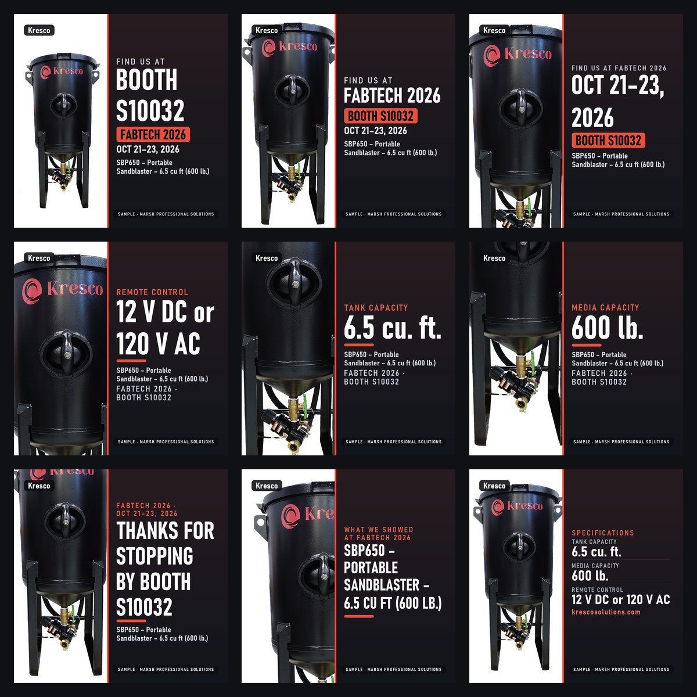
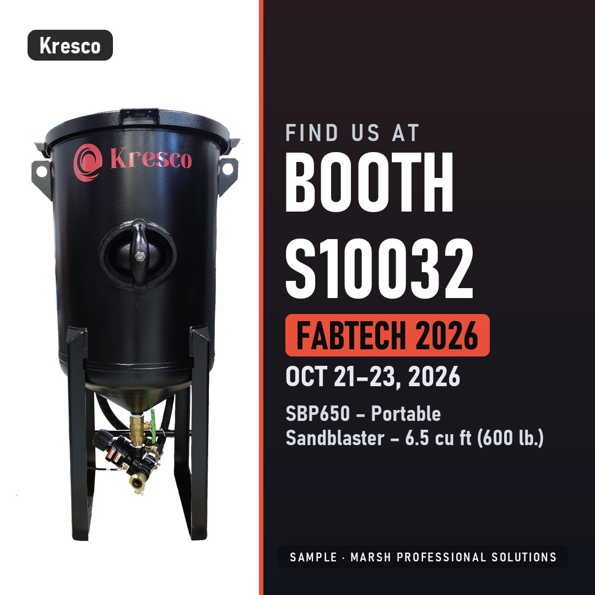
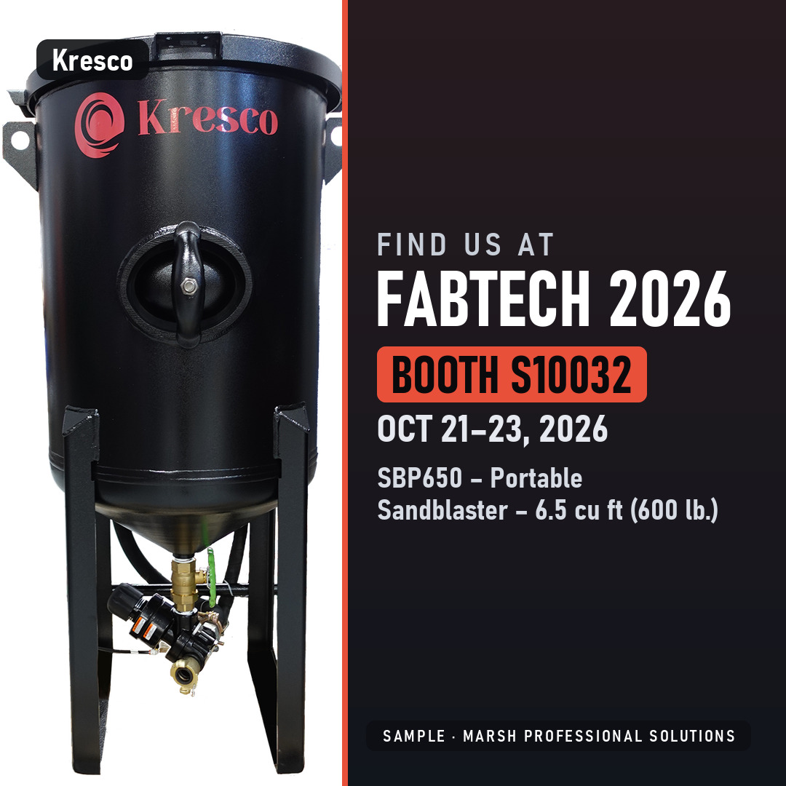
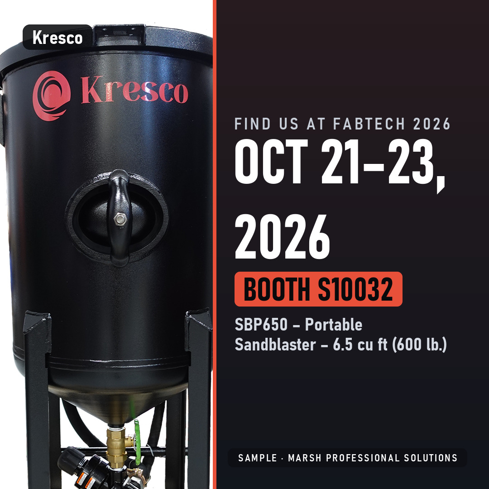
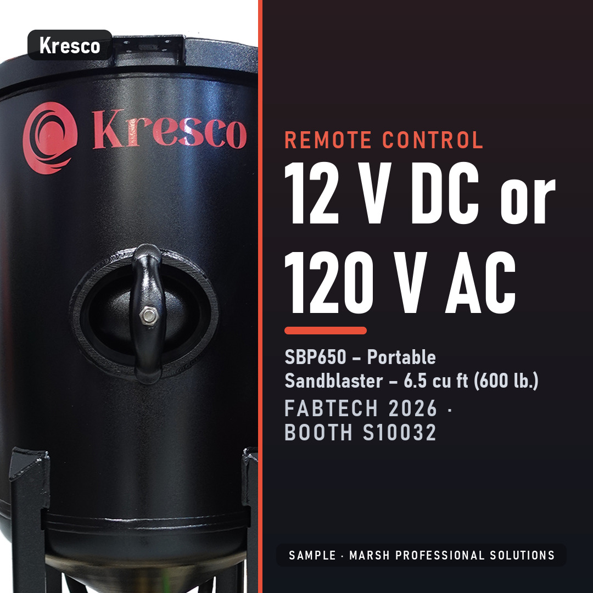
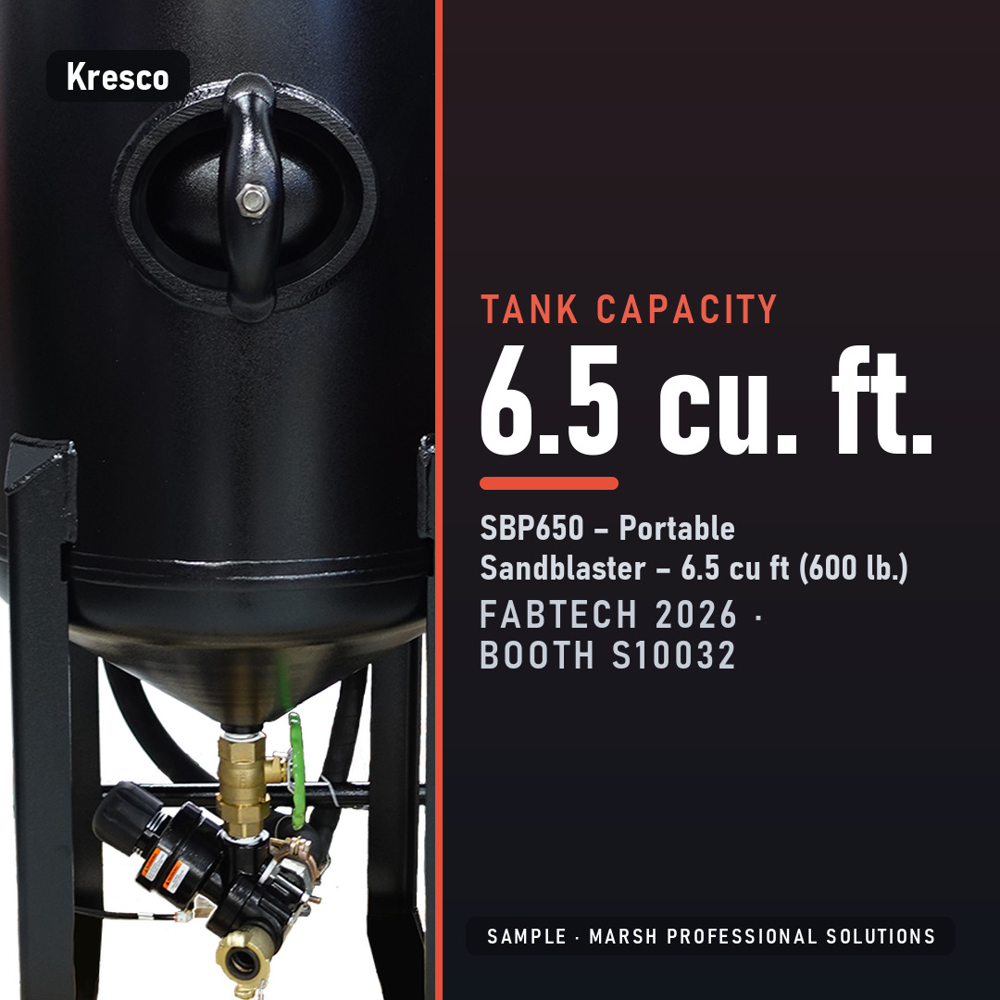
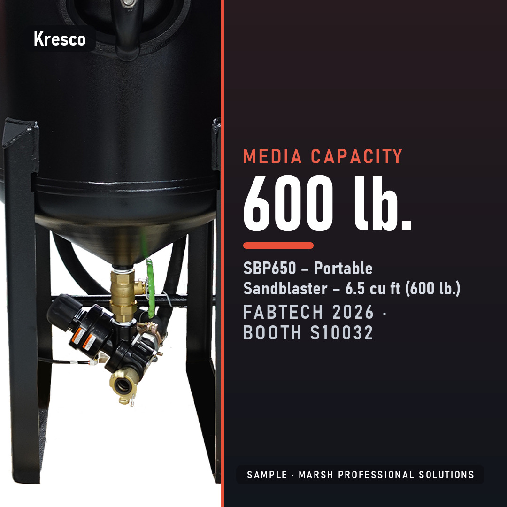
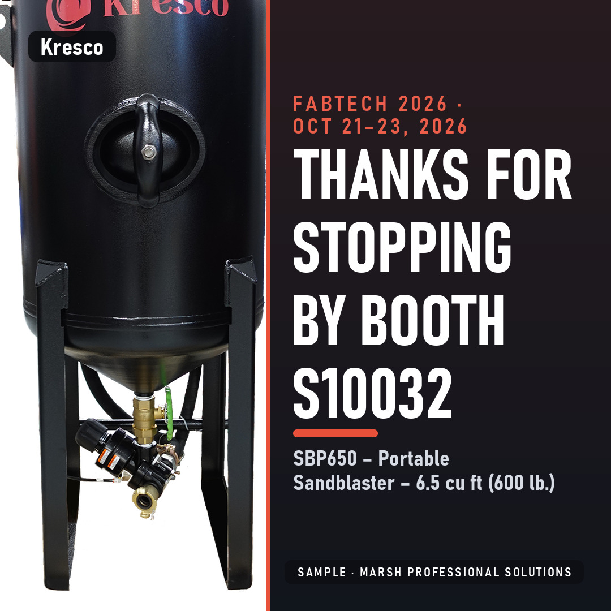
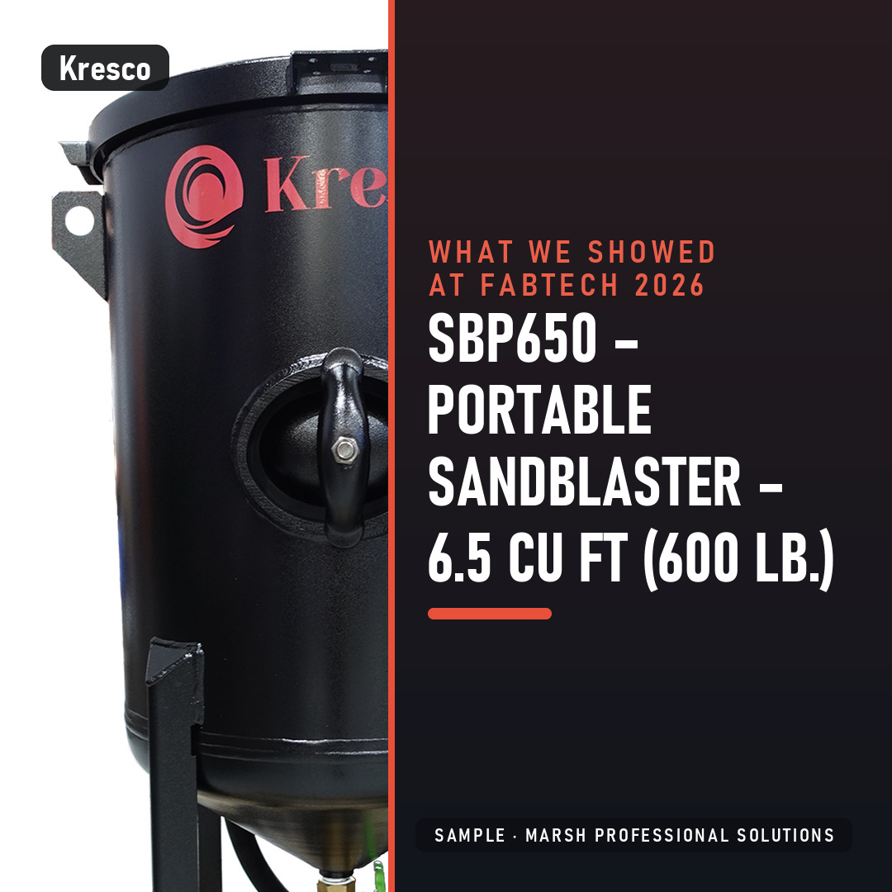
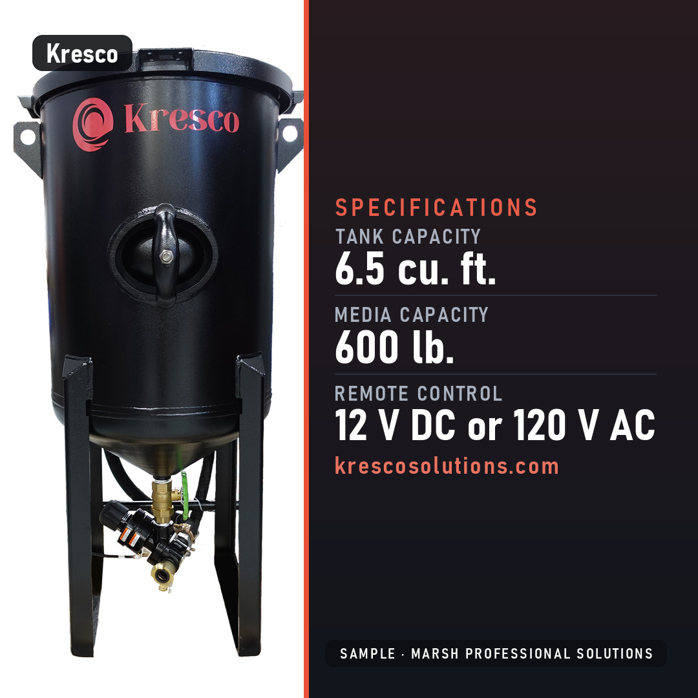

Show-week post pack sample
Nine posts for FABTECH 2026, booth S10032, made from the photos and specifications on your website. Square tiles for LinkedIn and Instagram, with a caption and a posting date for each. The numbers on the tiles are copied from your published spec page. This sample carries a small SAMPLE mark.

The nine posts

Tue Oct 13 · teaser 1We'll be at FABTECH 2026 on Oct 21 to 23, booth S10032. Stop by and ask us about the SBP650, Portable Sandblaster, 6.5 cu ft (600 lb.). #FABTECH
Fri Oct 16 · teaser 2FABTECH 2026 is coming up (Oct 21 to 23). Find us at booth S10032 and bring your questions about the SBP650, Portable Sandblaster, 6.5 cu ft (600 lb.). #FABTECH
Mon Oct 19 · teaser 3FABTECH 2026 opens Oct 21. Find us at booth S10032. #FABTECH
Wed Oct 21 · spotlight 1Remote control: 12 V DC or 120 V AC. That's the SBP650, Portable Sandblaster, 6.5 cu ft (600 lb.). Find us at booth S10032, FABTECH 2026. #FABTECH
Thu Oct 22 · spotlight 2On the SBP650, Portable Sandblaster, 6.5 cu ft (600 lb.), tank capacity is 6.5 cu. ft. Questions? Ask us at booth S10032. #FABTECH
Fri Oct 23 · spotlight 3Media capacity on the SBP650, Portable Sandblaster, 6.5 cu ft (600 lb.): 600 lb. We're at booth S10032, FABTECH 2026. #FABTECH
Mon Oct 26 · postshow 1Thank you to everyone who stopped by booth S10032 at FABTECH 2026. If we missed you, find us at krescosolutions.com. #FABTECH
Tue Oct 27 · postshow 2What we showed at FABTECH 2026: the SBP650, Portable Sandblaster, 6.5 cu ft (600 lb.). Details are on krescosolutions.com. #FABTECH
Fri Oct 30 · postshow 3The SBP650, Portable Sandblaster, 6.5 cu ft (600 lb.), as published: tank capacity 6.5 cu. ft., media capacity 600 lb., remote control 12 V DC or 120 V AC. More at krescosolutions.com. #FABTECHPosting calendar
Keyed to the show dates (Oct 21 to 23, 2026).
| Date | Day | Post | When |
|---|---|---|---|
| 2026-10-13 | Tue | teaser 1 | 10 days before the show opens (earliest posting day) |
| 2026-10-16 | Fri | teaser 2 | 5 days before the show opens |
| 2026-10-19 | Mon | teaser 3 | 2 days before the show opens |
| 2026-10-21 | Wed | spotlight 1 | show day 1 |
| 2026-10-22 | Thu | spotlight 2 | show day 2 |
| 2026-10-23 | Fri | spotlight 3 | show day 3 |
| 2026-10-26 | Mon | postshow 1 | 1 day after the show closes (next weekday) |
| 2026-10-27 | Tue | postshow 2 | 3 days after the show closes (next weekday) |
| 2026-10-30 | Fri | postshow 3 | 7 days after the show closes |